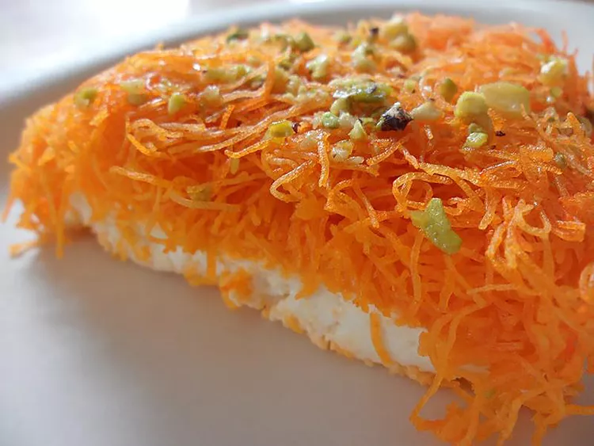

Knafa Recipe - Best Dessert from the Middle East

Description
This kanafa, or knafeh, recipe is a favorite Palestinian dessert.
Crunchy shredded phyllo dough is baked with a layer
of creamy sweet cheese and then drenched in rosewater syrup.
Ingredients
- 1 (16 ounce) box shredded phyllo dough (kataifi)
- (15 ounce) container ricotta cheese
- 1 cup shredded mozzarella cheese
- ⅓ cup white sugar
- 12 ounces unsalted butter
Steps
- Preheat Oven to 400F degrees
- Prepare Knafa, finely chop phyllo dough and pour into large mixing bowl
- Mix unsalted butter into the phyllo dough
- Bake in oven for 20 to 25 minutes.